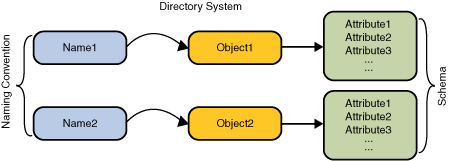

Many naming services are extended with a directory service. A directory service associates names with objects and also associates such objects with attributes.directory service = naming service + objects containing attributes
You not only can look up an object by its name but also get the object's attributes or search for the object based on its attributes.
 An example is the telephone company's directory service. It maps a subscriber's name to his address and phone number. A computer's directory service is very much like a telephone company's directory service in that both can be used to store information such as telephone numbers and addresses. The computer's directory service is much more powerful, however, because it is available online and can be used to store a variety of information that can be utilized by users, programs, and even the computer itself and other computers.
A directory object represents an object in a computing environment. A directory object can be used, for example, to represent a printer, a person, a computer, or a network. A directory object contains attributes that describe the object that it represents.
Attributes
A directory object can have attributes. For example, a printer might be represented by a directory object that has as attributes its speed, resolution, and color. A user might be represented by a directory object that has as attributes the user's e-mail address, various telephone numbers, postal mail address, and computer account information.
An attribute has an attribute identifier and a set of attribute values. An attribute identifier is a token that identifies an attribute independent of its values. For example, two different computer accounts might have a "mail" attribute; "mail" is the attribute identifier. An attribute value is the contents of the attribute. The email address, for example, might have:
Attribute Identifier : Attribute Value mail john.smith@somewhere.comDirectories and Directory Services
A directory is a connected set of directory objects. A directory service is a service that provides operations for creating, adding, removing, and modifying the attributes associated with objects in a directory. The service is accessed through its own interface.Many examples of directory services are possible.
- Network Information Service (NIS)
- NIS is a directory service available on the Unix operating system for storing system-related information, such as that relating to machines, networks, printers, and users.
- Sun Java Directory Server
- The Sun Java Directory Server is a general-purpose directory service based on the Internet standard LDAP
- Novell Directory Service (NDS)
- NDS is a directory service from Novell that provides information about many networking services, such as the file and print services.
Search Service
You can look up a directory object by supplying its name to the directory service. Alternatively, many directories, such as those based on the LDAP, support the notion of searches. When you search, you can supply not a name but a query consisting of a logical expression in which you specify the attributes that the object or objects must have. The query is called a search filter. This style of searching is sometimes called reverse lookup or content-based searching. The directory service searches for and returns the objects that satisfy the search filter.For example, you can query the directory service to find:
- all users that have the attribute "age" greater than 40 years.
- all machines whose IP address starts with "192.113.50".
Combining Naming and Directory Services
Directories often arrange their objects in a hierarchy. For example, the LDAP arranges all directory objects in a tree, called a directory information tree (DIT). Within the DIT, an organization object, for example, might contain group objects that might in turn contain person objects. When directory objects are arranged in this way, they play the role of naming contexts in addition to that of containers of attributes.